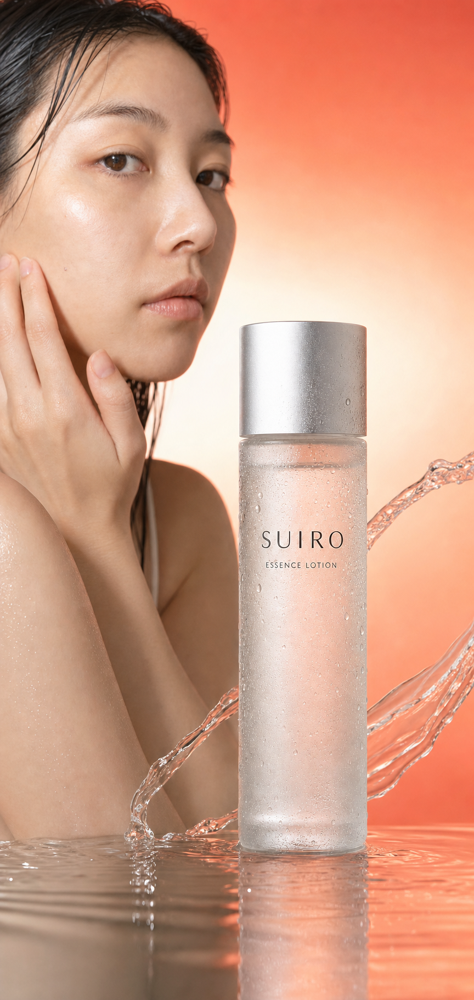

使用前の生活場面
人物写真は生活シーンのイメージで、購入者や体験者ではありません。
水のように軽い化粧水
SUIRO ESSENCE LOTION 150mL
朝も、夜も。重ねても軽い。
※本ページは架空商品のデザインレビューです。
商品情報

150mL
税込3,520円
無香料／朝・夜
架空商品のため、実際には購入できません。送料・配送・支払・返品条件は未設定です。
このページに、ないもの
確認できる商品仕様と、使い方だけを掲載しています。

さらっと広がる質感を、朝と夜のスキンケアへ。効果や肌適合性を保証する表現ではありません。
中身は、これだけ
最初は顔全体に。次は、頬や口元など気になる部分に。最後に手のひらで軽く押さえます。
▼

1最初に顔全体へ
2次に気になる部分へ
3最後に手のひらで押さえる
少量を手のひらへ取り、顔全体になじませます。使用量は肌の状態に合わせて調整してください。
頬口元頬・口元など、気になる部分へ少量を重ねます。乾燥改善などの効能を示す説明ではありません。

確認できる製品情報
全成分、試験結果、対象肌、使用期間の確定情報はないため掲載していません。
朝の使い方

夜の使い方
液体の見え方
見た目透明な液体
使用感水のように軽い
香り無香料
画像は使用感を伝えるためのイメージです。成分や効果を示すものではありません。
掲載情報について
人物写真は生活シーンのイメージで、購入者や体験者ではありません。
塗布動作を確認するためのイメージです。
商品正本に沿ったボトル形状です。
商品をもう一度確認
化粧水 150mL
税込3,520円
無香料／朝・夜
本ページでは注文は成立しません。
よくある質問
SUIRO エッセンスローションは、150mLの化粧水という架空の商品です。水のように軽い使用感を想定しています。
朝・夜の洗顔後を想定しています。
少量を2回に分け、顔全体と気になる部分へなじませる使い方を想定しています。具体的な適量は確定していません。
確定情報がないため掲載していません。
架空商品のため、実際には購入できません。
お申し込みフォーム
このフォームは構造レビュー用です。入力・保存・送信・決済はできません。